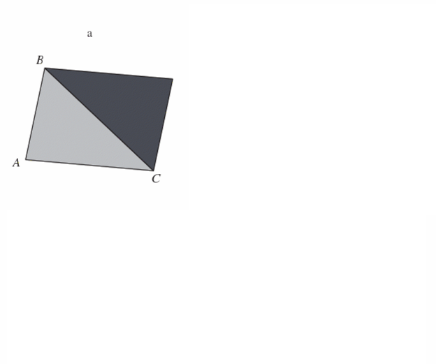
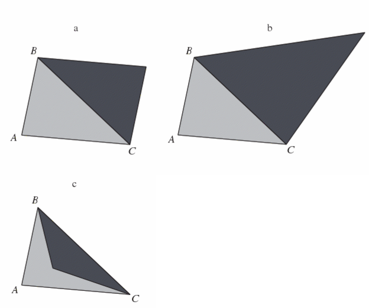
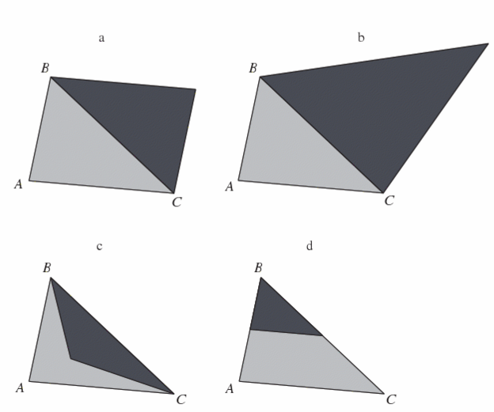
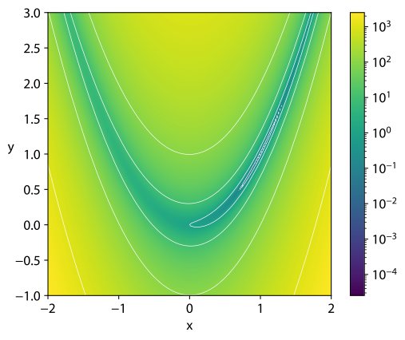
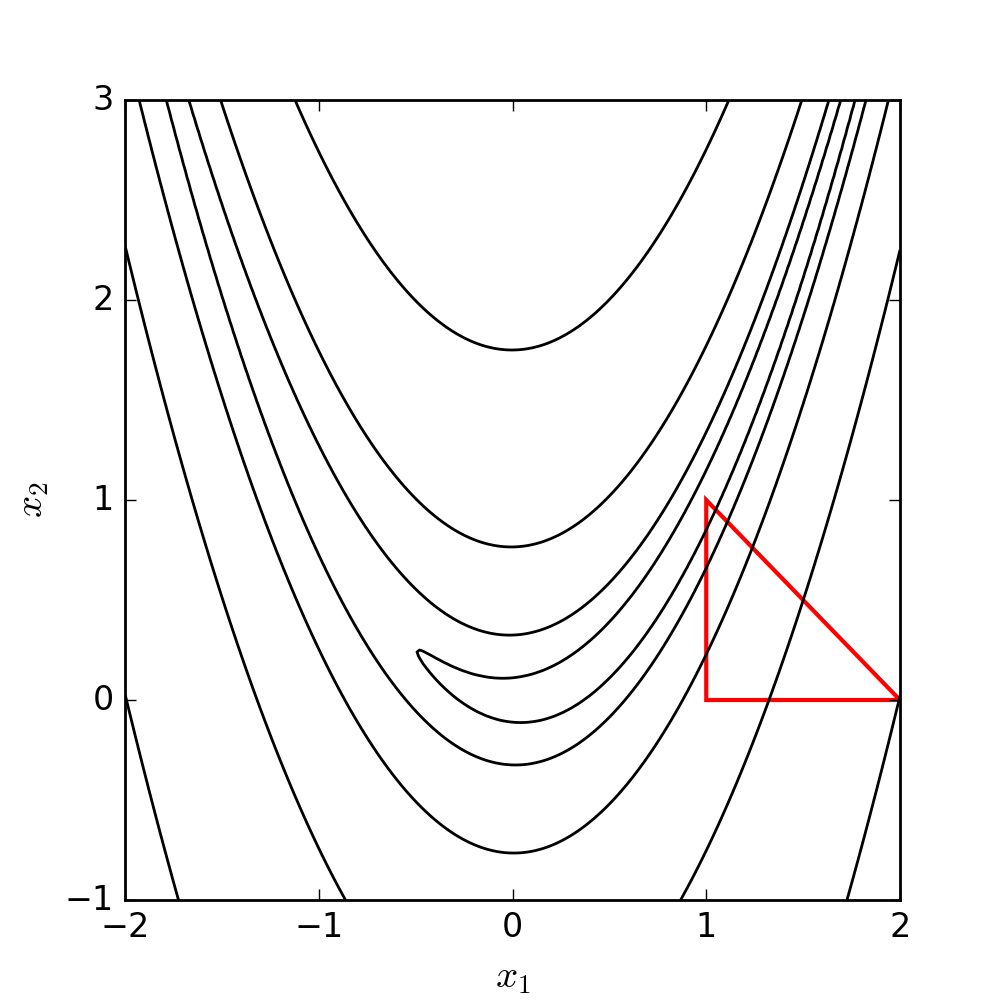

If x^* is a local minimizer and f is continuously differentiable in an open neighborhood of x^*, then \nabla f(x^*) = 0
. . .
If n = 1, this means that f^{\prime}(x^*) = 0
. . .
Note that this is only a necessary condition
So, we can look for points where the first derivative is zero (with rootfinding)
But, once we find them, we can’t be sure yet if these points indeed are local minimizers
1.7 Identifying local optima
Theorem 2: Second-Order Necessary Conditions
If x^* is a local minimizer of f and \nabla^2 f exists and is continuously differentiable in an open neighborhood of x^*, then \nabla f(x^*) = 0 and \nabla^2 f(x^*) is positive semidefinite
. . .
If n = 1, this means that f^{\prime \prime}(x^*) \geq 0, i.e., the function is locally convex
Positive semidefiniteness is the multidimensional analogous of convexity in 1D
A matrix B is positive semidefinite if p^\prime B p \geq 0 for all p
. . .
For maximization problems, we check whether \nabla^2 f(x^*) is negative semidefinite
1.8 Identifying local optima
Theorem 3: Second-Order Sufficient Conditions
Suppose \nabla^2 f is continuous in an open neighborhood of x^* and that \nabla f(x^*) = 0 and \nabla^2 f is positive definite. Then x^* is a strict local minimizer of f
. . .
Note that these are sufficient conditions, not necessary conditions
For example, f(x) = x^4 has a local minimizer at x^* = 0. But this point does not satisfy the 2nd-order sufficient conditions
1.9 Conditions for global optima
Another theorem can help us characterize global optima
Theorem 4: Second-Order Sufficient Conditions for Global Optima
When f is convex, any local maximizer x^* is a global minimizer of f. If in addition f is differentiable, then any point x^* at which \nabla f(x^*) = 0 is a global minimizer of f
If the function is globally convex, any local minimizer we find is also a global minimizer
2 Optimization algorithms
2.1 Optimization algorithms
Optimization problems have many similarities to problems we’ve already seen in the course
FOCs of an unconstrained optimization problem are similar to a rootfinding problem
FOCs of a constrained optimization problem are similar to a complementarity problem
2.2 Optimization algorithms
We typically want to find a global optimum of our objective function f
Typically, analytic problems are set up to have a unique minimum so any local solver can generally find the global optimum
But many problems in Economics don’t satisfy the typical sufficiency conditions for a unique minimum (strictly decreasing and convex), such as
Games with multiple equilibria
Concave state transitions
Certain types of estimation procedures
2.3 Optimization algorithms
We make two initial distinctions between solvers (i.e., optimization algorithms):
Local vs global: are we finding an optimum in a local region, or globally?
Most solvers search local optima
. . .
Derivative-using vs derivative-free: do we want to use higher-order information?
. . .
In this course, we’ll focus on local solvers
Global solvers are usually stochastic or subdivide the search space and apply local solvers
Common global solvers: genetic algorithms, simulated annealing, DIRECT, and Sto-go
2.4 Optimization algorithms
How do we find a local minimum?
Do we need to evaluate every single point?
. . .
Optimization algorithms typically have the following set up:
Start at some x_0
Work through a series of iterates \{x^{(k)}\}_{k=1}^\infty until it “converges” with sufficient accuracy
. . .
If the function is smooth, we can take advantage of that information about the function’s shape to figure out which direction to move in next
2.5 Solution strategies: line search vs. trust region
When we move from x^{(k)} to the next iteration, x^{(k+1)}, we have to decide
Which direction from x^{(k)}
How far to go from x^{(k)}
. . .
There are two fundamental solution strategies that differ in the order of those decisions
Line search methods first choose a direction and then select the optimal step size
. . .
Trust region methods first choose a step size and then select the optimal direction
. . .
We’ll see the details of each strategy later. Let’s start with two relatively simple, derivative-free methods
2.6 Derivative-free optimization: golden search
Similar to bisection, golden search looks for a solution of a one-dimensional problem over smaller and smaller brackets
. . .
We have a continuous one dimensional function, f(x), and we want to find a local minimum in some interval [a,b]
2.7 Derivative-free optimization: golden search
Select points x_1,x_2 \in [a,b] where x_2 > x_1
Compare f(x_1) and f(x_2)
If f(x_1) < f(x_2), replace [a,b] with [a,x_2]
Else, replace [a,b] with [x_1,b]
Repeat until a convergence criterion is met
. . .
Replace the endpoint of the interval next to the evaluated point with the highest value
\rightarrow keep the lower evaluated point in the interval
\rightarrow guarantees that a local minimum still exists
2.8 Derivative-free optimization: golden search
How do we pick x_1 and x_2?
. . .
Achievable goal for selection process:
New interval is independent of whether the upper or lower bound is replaced
Only requires one function evaluation per iteration
The value of \alpha_2 is called the golden ratio, from where the algorithm gets its name
2.10 Golden search in practice
Let’s write a function to perform the golden search algorithm golden_search(f, lower_bound, upper_bound), then use it to find the minimizer of f(x) = 2x^2 - 4x between -4 and 4.
Steps:
Calculate points x_1,x_2 \in [a,b]
x_1 = a + \frac{3-\sqrt{5}}{2} (b-a) and x_2 = a + \frac{\sqrt{5} - 1}{2} (b-a)
Golden search is nice and simple but only works in one dimension
There are several derivative free methods for minimization that work in multiple dimensions. The most commonly used one is the Nelder-Mead (NM) algorithm
. . .
NM works by first constructing a simplex: we evaluate the function at n+1 points in an n dimensional problem
It then manipulates the highest value point, similar to golden search
2.15 Derivative-free optimization: Nelder-Mead
There are six operations:
. . .
Order: order the value at the vertices of the simplex f(x_1)\leq \dots \leq f(x_{n+1})
. . .
Centroid: calculate x_0, the centroid of the non - x_{n+1} points
2.16 Derivative-free optimization: Nelder-Mead
Reflection: reflect x_{n+1} through the opposite face of the simplex and evaluate the new point: x_r = x_0 + \alpha(x_0 - x_{n+1}), \alpha > 0
If this improves upon the second-highest but is not the lowest value point, replace x_{n+1} with x_r and restart
If this is the lowest value point so far, expand
If f(x_r) > f(x_n), contract

2.17 Derivative-free optimization: Nelder-Mead
Expansion: push the reflected point further in the same direction
Contraction: Contract the highest value point toward the middle
If x_c is better than the worst point, replace x_{n+1} with x_c and restart
Else, shrink

2.18 Derivative-free optimization: Nelder-Mead
Shrinkage: shrink the simplex toward the best point
Replace all points but the best one with x_i = x_1 + \sigma(x_i - x_1)
Repeats these steps until a convergence criterion is met: usually, when the sum of the distances between the vertices and the centroid is smaller than some tolerance level

2.19 Nelder-Mead illustration
Let’s see NM in action minimizing a classic function in the optimization literature: the Rosenbrock (or banana) function
f(x, y) = (a - x)^2 + b(y - x^2)^2
Its global minimizer is (x, y) = (a, a^2 )
Contour (level) plot of the Rosenbrock function \rightarrow
a = 1, b = 100

2.20 Nelder-Mead illustration

(Here, x_1 = x and x_2 = y)
2.21 Nelder-Mead in Julia
Nelder-Mead is a pain to code efficiently: don’t spend the time doing it yourself!
For unconstrained optimization, Julia’s most mature package is Optim.jl, which includes NM
. . .
Code
usingOptim;# Define Rosenbrock function with a = 1, b = 100f(x) = (1.0- x[1])^2+100.0* (x[2] - x[1]^2)^2; x0 = [0.0, 0.0]; # initial guess
2.22 Nelder-Mead in Julia
Code
soln = Optim.optimize(f, x0, NelderMead())
* Status: success
* Candidate solution
Final objective value: 3.525527e-09
* Found with
Algorithm: Nelder-Mead
* Convergence measures
√(Σ(yᵢ-ȳ)²)/n ≤ 1.0e-08
* Work counters
Seconds run: 0 (vs limit Inf)
Iterations: 60
f(x) calls: 117
2.23 Nelder-Mead in Julia
We can check the solution and the minimum value attained using